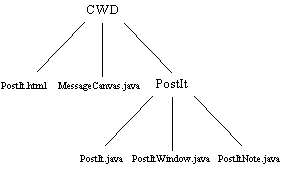

The StikNote package
The three classes intimately concerned with the
StikNote
application the StikNote class,
the StikNoteWindow class and the
StikNoteNote class are all contained
within a package called StikNote.
This requires them all to have as the first non-comment line a
declaration stating this:
package StikNote;
And also requires them to be stored in a sub-directory of the
current working directory called StikNote.

This requires the StikNote.java source code file to acknowledge
this as it imports the other two files.
import StikNote.StikNoteWindow;
import StikNote.StikNoteNote;
And also requires that the compilation of these packages takes
place from the current working directory, specifying a relative
path.
CWD> javac StikNote\StikNote.java
The StikNote.html file is also contained in the current working
directory and has to indicate the location of the class file in
its <APPLET> tag as follows.
APPLET CODE="StikNote.StikNote.class"
The collection of closely related classes into packages and the
systematic naming and storing of them on a file system facilitates
source code maintenance and control. The MessageCanvas
class is seen as much more general purpose and so is not contained
within the package.